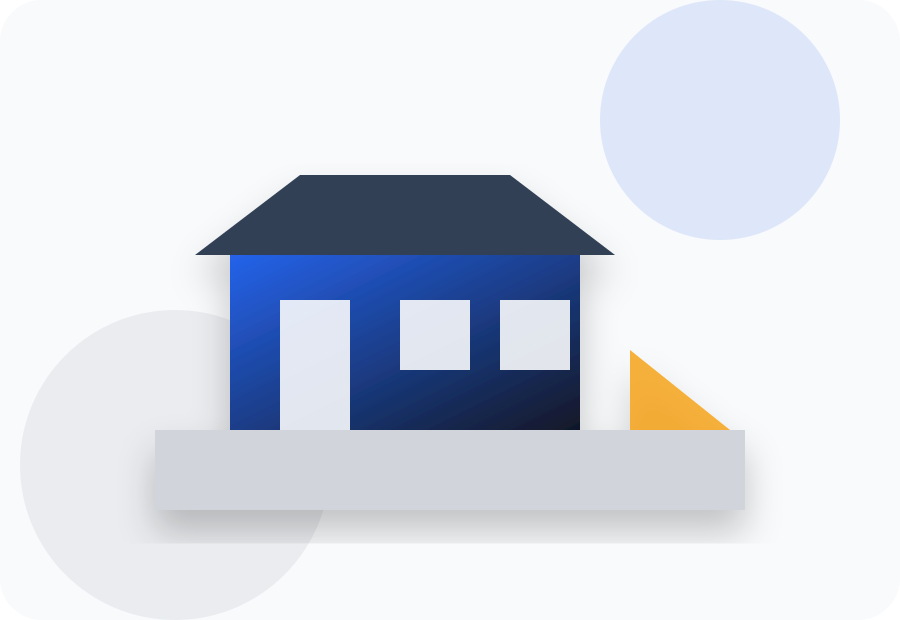

Личный контроль
Руководитель участвует в ключевых решениях, проверяет качество и отвечает перед клиентом.
Берём объект в работу официально: фиксируем смету, управляем материалами, показываем этапы и отвечаем за результат гарантией до 2 лет.
Вместо безликой бригады — понятная строительная команда с договором, прозрачной сметой и контролем каждого этапа.

Руководитель участвует в ключевых решениях, проверяет качество и отвечает перед клиентом.
Помогаем закупать черновые и чистовые материалы без лишних наценок.
Команда закрывает ремонт, отделку, электрику, сантехнику, остекление и балконы.
Каждое направление вынесено в отдельную SEO-страницу, чтобы сайт можно было быстро расширить и продвигать в поиске.
Ровная геометрия стен машинным способом для квартир, домов и коммерческих помещений.
Подробнее →Точная отделка сложных зон, откосов и помещений, где важна ручная проработка.
Подробнее →Полный цикл ремонта квартиры: проектирование, черновые работы, чистовая отделка и сдача.
Подробнее →Комплексный ремонт частных домов с инженерией, отделкой и контролем сроков.
Подробнее →Ремонт офисов, магазинов, производственных и общественных помещений без хаоса для бизнеса.
Подробнее →Чистовая и декоративная отделка объектов под бренд, поток клиентов и эксплуатацию.
Подробнее →Тёплое и холодное остекление домов с подбором профиля и монтажом.
Подробнее →Окна, лоджии и балконы с замером, доставкой и аккуратной установкой.
Подробнее →Витражи, входные группы и оконные конструкции для бизнеса.
Подробнее →Отделка, укрепление, полы, стены, потолки и свет для комфортного балкона.
Подробнее →Тёплый контур балкона: утеплитель, пароизоляция, отделка и электрика.
Подробнее →Проводка, щиты, розетки, освещение и электрика под ключ по проекту.
Подробнее →Водоснабжение, канализация, коллекторы, точки подключения и монтаж оборудования.
Подробнее →Разводка сантехники в новых квартирах и домах с понятной схемой подключения.
Подробнее →Инженерная сантехника для офисов, кафе, производств и общественных объектов.
Подробнее →Перегородки, короба, потолки и декоративные конструкции из ГКЛ.
Подробнее →Подготовка стен и аккуратная поклейка обоев без пузырей и перекосов.
Подробнее →Финишное выравнивание стен под покраску, обои и декоративные покрытия.
Подробнее →Выравнивание стен и потолков с контролем плоскости и углов.
Подробнее →Фактурные и премиальные покрытия для акцентных стен и коммерческих интерьеров.
Подробнее →Готовый ремонт от 44 000 ₽/м²: работы, материалы, мебель, техника и сдача под ключ.
Подробнее →Один подрядчик на весь объект: смета, договор, ремонт, снабжение и контроль качества.
Подробнее →Формат для клиентов, которым нужен понятный результат: дизайн, работы, материалы, мебель, техника и финальная сдача объекта.
Упор на официальный формат, управляемый процесс и предсказуемый результат.
Понятное условие работы, которое снижает риски клиента и помогает держать объект под контролем.
Понятное условие работы, которое снижает риски клиента и помогает держать объект под контролем.
Понятное условие работы, которое снижает риски клиента и помогает держать объект под контролем.
Понятное условие работы, которое снижает риски клиента и помогает держать объект под контролем.
Понятное условие работы, которое снижает риски клиента и помогает держать объект под контролем.
Понятное условие работы, которое снижает риски клиента и помогает держать объект под контролем.
Законодательное собрание Челябинской области, заводы, производственные предприятия, распределительные центры и коммерческие объекты.
В статической версии сделан визуальный шаблон. На WordPress этот блок лучше подключить через галерею и фильтр по услугам.
Клиент понимает, что происходит с объектом от заявки до сдачи.
Фиксируем задачу, сроки и следующий шаг.
Фиксируем задачу, сроки и следующий шаг.
Фиксируем задачу, сроки и следующий шаг.
Фиксируем задачу, сроки и следующий шаг.
Фиксируем задачу, сроки и следующий шаг.
Фиксируем задачу, сроки и следующий шаг.
Фиксируем задачу, сроки и следующий шаг.
После получения материалов заказчика сюда можно поставить скриншоты отзывов, видео и отзывы с карт.
Блок закрывает возражения и помогает пользователю быстрее оставить заявку.
Да, после замера и согласования состава работ фиксируем стоимость в договоре.
Да, выполняем ремонт, отделку, остекление и инженерные работы для офисов, производств и торговых помещений.
Гарантия до 2 лет, конкретные условия зависят от вида работ и прописываются в договоре.
Да, оставьте заявку — специалист свяжется, уточнит задачу и согласует время выезда.
Да, можем закупать материалы по оптовым ценам и вести снабжение объекта.
Да, берем объект от первичной консультации и сметы до финальной сдачи.
Да, подготовим КП для частного или коммерческого объекта после уточнения вводных.
Желательно. Фото и видео помогают быстрее понять объем и подготовить предварительный расчет.
Да, основной формат — договор, смета, этапность и понятные обязательства сторон.
Да, по договоренности отправляем фотоотчеты по этапам выполнения работ.
Опишите объект, вид работ и удобное время связи. В рабочей версии форма подключается к WordPress, Telegram, WhatsApp, Метрике и CRM.